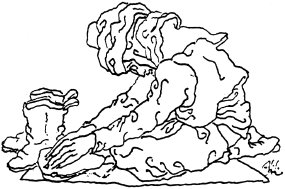

ŞİTİL HOCANIN AĞIDI
Maraş ilinin Andırın ilçesi Gökahmetli köyünden olan Şitil Hoca öldüğünde ağıdı Fadıma Hatun yakıyor. Ağıdın yakılışı 1910.
Altmış arşın kuyusu var
Suyu çıkar dolap ile
Kimseleri bir şey sanmaz
Uğraşırdı Halep ile
Evinin önü sekili
Kürk giyer cebi kokulu
Kalan umudum kesildi
Kaldırırım mor kakülü
Öksüz başım garip başım
Kar altında kaldı eşim
Gönlüm Göksünü arzular
Salmıyor zalım kardeşim
Sabahleyin bir yel esti
Ahacık çorabı mesti
Kör olasın koca Göksün
Ağam oraya kadem bastı
Fadisine göstereyim
Beserek getir heybeyi
İzar başından inmezdi
Bacın da düştü ıvgaya
Akşamleyin atlı geldi
Sordum idi acı haber
Akşamki yediğim yemek
Bilmem ağı bilmem biber
Hocam evine hoş geldi
Değnedim eli boş geldi
Ellere çiçek açıldı
Bu yıl bize de kış geldi
Kalan Artık
Kaldırırım mor kakülü Mor kakülümü keserim.
Değnemek Bakmak.
İzar Renkli çarşaf.
Ivga Kuşku.